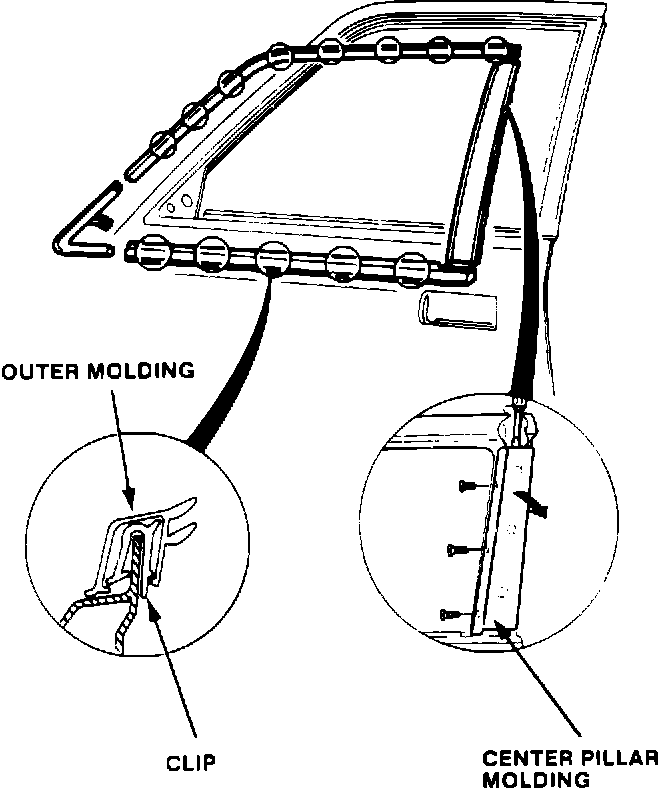

Center Pillar Molding - Split
YEAR MODEL'87-88 LEGEND SEDAN
VIN APPLICATION BULLETIN NO
Thru VIN
KA4 . . . JC004545 89-002
February 6, 1989
Split Center Pillar Molding
PROBLEM
The rubber on the trailing edge of the front door's center pillar molding is split.
CORRECTIVE ACTION
Replace both the left and right center pillar moldings, even if only one is split. Use the improved parts listed under PARTS INFORMATION.

PROCEDURE
1. Starting at the rear, remove the outer molding by prying it up with a flat tip screwdriver.
2. Remove the center pillar molding by first removing the three screws, then carefully pry it off with a long flat tip screwdriver, as shown.
3. Install the new center pillar molding, then reinstall the outer molding.
PARTS INFORMATION
Center pillar molding
Left: 72470-SD4-023
Right: 72430-SD4-023
WARRANTY CLAIM INFORMATION
Operation number: 835135
Flat rate time: 1.0 hour
Failed P/N: 72470-SD4-023
Defect code: 021
Contention code: A99